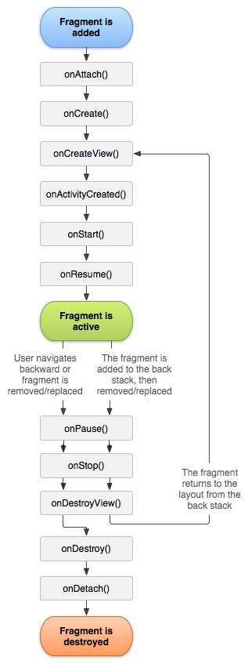

Android è uno stack software open-source basato su Linux.

Qui vengoono create tutte le applicazioni e vengono eseguite utilizzando le classi e i servizi dell'Application Framework.
Classi per la creazione di applicazioni Android. Serve per astrarre l'accesso all'hardware e alle risorse.
View System
Tutte le view come text, grid, list, buttons etc..
Resource Manager
Per accedere a tutti i file delle risorse.
Notification Manager
Per creare gli alert nella barra di stato.
Activity Manager
Gestisce il lifecycle delle app e fornisce il navigation back stack, cioè lo stack in cui vengono inserite tutte le activities con cui l'utente ha interagito e da cui vengono richiamate quando l'utente clicca il tasto indietro.
Content Providers
Gestiscono l'acceso ai dati immagazzinati dall'applicazione stessa o da altre app, e forniscono la possibilità di condividere dati con altre app. In pratica crea un livello in più di astrazione tra il database e le applicazioni. In questo modo se voglio per esempio cambiare il mio database da SQLite ad altro non devo modificare il collegamento in tutte le app, ma solo del content provider.
Librerie native scritte in C/C++. Componenti che interagiscono sia con la parte più bassa del sistema operativo che con la parte più alta. Si occupano di integrazione di web browser, internet security, mediaplayer, gestione di database etc..
E' il motore del sistema e insieme alle librerie, forma la base dell'Application Framework. Differenzia un dispositivo Android da uno basato su un sistema Linux.
Diversi moduli di librerie, ognuno dei quali implementa un interfaccia per uno specifico componente hardware. Quando una API fa una chiamata per accedere ad un componente hardware, il sistema Android carica il modulo di librerie collegato a quel componente.
Moduli e componenti che fanno funzionare il dispositivo. I vari driver,. componenti network e security, power management.
Un insieme di tools indispensabili per costruire, testare e effettuare il debug delle applicazioni Android, gestiti tramite l'Android SDK Manager avviabile dall'IDE utilizzato.
Il compilatore è un componente che traduce il codice di programmazione in codice bytecode che poi sarà eseguito dall'ART.
Nell'Android SDK sono presenti poi le API di Google.
La View, solitamente chiamata widget, è una classe base dell'interfaccia utente che costituisce un blocco con cui solitamente l'utente può interagire. Alcune delle più comuni View sono Button, TextView, ImageView, EditText, ListView.
Il ViewGroup è una View speciale che ne può contenere altre definendone la struttura. Un esempio è il RadioGroup.
Il Layout è un ViewGroup che ha il solo scopo di controllare il posizionamento delle sue child View sullo schermo. Alcuni Layout comuni sono Linear Layout, Relative Layout, Constrain Layout, Web View.
La Activity è l'entry port per far interagire l'utente con l'app e per la navigazione all'interno dell'applicazione e tra app diverse.
Rappresenta una singola vista dell'applicazione ed al suo interno contiene una o più View. Le activities comunicano fra di loro tramite gli Intent.

La activity passa attraverso diversi stati. Per gestire le transizioni tra stati si utilizzano una serie di callback.
setContentView() per associare il layout a questa activity. Il Fragment rappresenta un comportamento o una parte UI di una Activity, una specie di sub-Activity che però ha un suo ciclo di vita.
Non può esistere senza una Activity ed il suo lifecycle è fortemente collegato a quello dell'Activity di appartenenza.
Un service è un component che funziona in background senza la diretta interazione con l'utente.
I broadcast sono messaggi inviati solitamente dall'Android System ma anche da un app, senza un destinatario preciso. Ogni app può poi intercettare questi messaggi.
Alcuni esempi sono il messaggio relativo all'attivazione o disattivazione della modalità aereo, una power bank connessa, lo schermo che si spegne/accende, la batteria che è quasi scarica.
I broadcast vengono inviati tramite intent e vengono intercettati da un app tramite un Broadcast Receiver.
Non hanno un interfaccia utente come le activities ma possono creare una notifica nella status bar.
Per registrare l'intenzione di ricevere un certo messaggio di broadcast bisogna inserire un intent filter nel manifest file, oppure lo si può fare dinamicamente.
I componenti che si usano per poter far interagire l'utente con l'app sono: Button, Text field, Seek bar (tipo barra di avanzamento canzone), Checkboxes, Radio buttons, Toggle (pulsante on/off), Spinner (menu a tendina), Pickers (tipo time pickers).